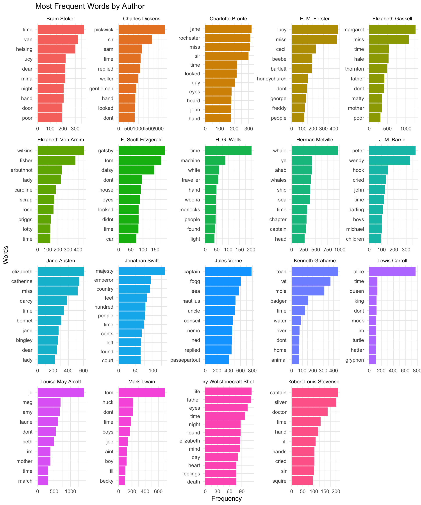

Now that we have our clean, standardized corpus of 26 classic works, we’re ready to begin our text analysis journey. In this episode, we’ll explore fundamental text analysis techniques that form the foundation for more sophisticated analyses.
We’ll start by examining word frequencies to understand which words appear most often in our texts. Then, we’ll calculate lexical density to measure vocabulary richness across different works and authors. Finally, we’ll explore readability metrics to assess text complexity. These basic analyses will give us our first insights into the linguistic patterns that distinguish different authors, genres, and time periods in our corpus.
Word Frequency Analysis
Word frequency analysis is one of the most fundamental techniques in text analysis. It helps us understand which words appear most often in our texts and can reveal important patterns about content, style, and themes.
Basic Word Counts
Let’s start by tokenizing our texts and examining the most frequent words across our entire sample corpus:
# Tokenize all texts and count word frequenciescorpus_words <- corpus_texts %>%select(author, title, text_clean) %>%unnest_tokens(word, text_clean) %>%count(word, sort =TRUE)# Display the top 20 most frequent wordscorpus_words %>%slice_head(n =20)
# A tibble: 20 × 2
word n
<chr> <int>
1 the 145089
2 and 93833
3 to 73111
4 of 72902
5 a 59253
6 i 54193
7 in 44105
8 was 36577
9 it 34497
10 that 32877
11 he 30956
12 his 25871
13 you 24998
14 with 23558
15 as 22959
16 her 22678
17 had 22195
18 for 21130
19 she 19803
20 at 18761
As expected, the most frequent words are stop words (function words like “the,” “and,” “to”). While these words are crucial for language structure, they don’t tell us much about the content or themes of our texts.
Removing Stop Words
Let’s remove stop words to focus on content words that carry more meaning:
# Remove stop words and examine content wordscontent_words <- corpus_texts %>%select(author, title, text_clean) %>%unnest_tokens(word, text_clean) %>%anti_join(stop_words, by ="word") %>%count(word, sort =TRUE)# Display the top 20 most frequent content wordscontent_words %>%slice_head(n =20)
# A tibble: 20 × 2
word n
<chr> <int>
1 time 4976
2 miss 3302
3 dont 3147
4 sir 2919
5 day 2786
6 looked 2614
7 eyes 2603
8 hand 2557
9 head 2394
10 pickwick 2370
11 dear 2098
12 replied 2082
13 life 1952
14 night 1946
15 found 1907
16 house 1859
17 round 1850
18 door 1814
19 mind 1782
20 heard 1731
Now we can see more meaningful words that give us insights into the themes and content of our corpus.
Visualizing Word Frequencies
Let’s create a visualization of the most frequent words:
content_words %>%slice_head(n =15) %>%mutate(word =reorder(word, n)) %>%ggplot(aes(x = word, y = n)) +geom_col(fill ="steelblue", alpha =0.8) +coord_flip() +labs(title ="Most Frequent Words in Our Literary Corpus",subtitle ="Stop words removed",x ="Words",y ="Frequency" ) +theme_minimal()
Author-Specific Word Frequencies
Now let’s examine how word usage varies by author. This can reveal distinctive vocabulary patterns:
# Calculate word frequencies by authorauthor_words <- corpus_texts %>%select(author, title, text_clean) %>%unnest_tokens(word, text_clean) %>%anti_join(stop_words, by ="word") %>%count(author, word, sort =TRUE) %>%group_by(author) %>%slice_max(n, n =10) %>%ungroup()# Visualize top words by authorauthor_words %>%ggplot(aes(x =reorder_within(word, n, author), y = n, fill = author)) +geom_col() +scale_x_reordered() +coord_flip() +facet_wrap(~author, scales ="free") +labs(title ="Most Frequent Words by Author",x ="Words",y ="Frequency" ) +theme_minimal() +theme(legend.position ="none")

Lexical Density Analysis
Lexical density measures the richness and variety of vocabulary in a text. It’s calculated as the ratio of unique words to total words, often expressed as a percentage:
\[
\text{Lexical Density} = \frac{\text{Number of Unique Words}}{\text{Total Number of Words}} \times 100
\]
Higher lexical density indicates more varied vocabulary, while lower density suggests more repetitive language.
Calculating Lexical Density
# Calculate lexical density for each textlexical_stats <- corpus_texts %>%select(author, title, year, genre, text_clean) %>%unnest_tokens(word, text_clean) %>%anti_join(stop_words, by ="word") %>%group_by(author, title, year, genre) %>%summarise(total_words =n(),unique_words =n_distinct(word),lexical_density = (unique_words / total_words) *100,.groups ="drop" ) %>%arrange(desc(lexical_density))lexical_stats
# A tibble: 25 × 7
author title year genre total_words unique_words lexical_density
<chr> <chr> <dbl> <chr> <int> <int> <dbl>
1 H. G. Wells The … 1895 Scie… 11162 4347 38.9
2 F. Scott Fitzgera… The … 1925 Soci… 17432 5775 33.1
3 Kenneth Grahame The … 1908 Fant… 20786 6618 31.8
4 Jonathan Swift Gull… 1726 Sati… 18142 5529 30.5
5 E. M. Forster A Ro… 1908 Soci… 22844 6909 30.2
6 Mark Twain Tom … 1876 Adve… 25728 7772 30.2
7 J. M. Barrie Pete… 1911 Fant… 15199 4465 29.4
8 Elizabeth Gaskell Cran… 1853 Dome… 23296 6680 28.7
9 Robert Louis Stev… Trea… 1883 Adve… 22647 6068 26.8
10 Jules Verne Arou… 1873 Adve… 24914 6631 26.6
# ℹ 15 more rows
Visualizing Lexical Density
lexical_stats %>%mutate(title =str_wrap(title, 20)) %>%ggplot(aes(x =reorder(title, lexical_density), y = lexical_density, fill = genre)) +geom_col() +coord_flip() +labs(title ="Lexical Density by Work",subtitle ="Percentage of unique words (stop words excluded)",x ="Work",y ="Lexical Density (%)",fill ="Genre" ) +theme_minimal()
Exploring Relationships
Let’s examine how lexical density relates to text length and publication year:
# Lexical density vs. text lengthlexical_stats %>%ggplot(aes(x = total_words, y = lexical_density)) +geom_point(aes(color = genre), size =3) +geom_smooth(method ="lm", se =FALSE, color ="gray50", linetype ="dashed") +geom_text(aes(label =str_wrap(title, 15)), vjust =-0.5, size =3) +labs(title ="Lexical Density vs. Text Length",x ="Total Words (excluding stop words)",y ="Lexical Density (%)",color ="Genre" ) +theme_minimal()
`geom_smooth()` using formula = 'y ~ x'
# Lexical density vs. publication yearlexical_stats %>%ggplot(aes(x = year, y = lexical_density)) +geom_point(aes(color = genre), size =3) +geom_smooth(method ="lm", se =FALSE, color ="gray50", linetype ="dashed") +geom_text(aes(label =str_wrap(title, 15)), vjust =-0.5, size =3) +labs(title ="Lexical Density Over Time",x ="Publication Year",y ="Lexical Density (%)",color ="Genre" ) +theme_minimal()
`geom_smooth()` using formula = 'y ~ x'
Basic Readability Metrics
Readability metrics help us assess how easy or difficult a text is to read. While these metrics have limitations, they provide useful baseline measurements for comparing texts.
Average Word Length
One simple measure of text complexity is average word length:
# Calculate average word length per textword_length_stats <- corpus_texts %>%select(author, title, text_clean) %>%unnest_tokens(word, text_clean) %>%mutate(word_length =nchar(word)) %>%group_by(author, title) %>%summarise(avg_word_length =mean(word_length),median_word_length =median(word_length),.groups ="drop" ) %>%arrange(desc(avg_word_length))word_length_stats
# A tibble: 25 × 4
author title avg_word_length median_word_length
<chr> <chr> <dbl> <dbl>
1 Jules Verne Twenty Thousa… 4.63 4
2 Jules Verne Around the Wo… 4.57 4
3 Herman Melville Moby Dick 4.49 4
4 Charles Dickens The Pickwick … 4.47 4
5 Jules Verne A Journey to … 4.44 4
6 Jane Austen Pride and Pre… 4.43 4
7 Mary Wollstonecraft Shelley Frankenstein;… 4.43 4
8 Jane Austen Northanger Ab… 4.41 4
9 Elizabeth Von Arnim The Enchanted… 4.38 4
10 H. G. Wells The Time Mach… 4.36 4
# ℹ 15 more rows
Sentence Length Analysis
We can also estimate sentence complexity by analyzing sentence lengths:
# A tibble: 25 × 5
author title avg_sentence_length median_sentence_length total_sentences
<chr> <chr> <dbl> <dbl> <int>
1 Jonathan Sw… Gull… 28.2 23 1851
2 Elizabeth G… Cran… 25.5 20 2806
3 Mary Wollst… Fran… 22.3 20 3378
4 Herman Melv… Moby… 20.0 14 10717
5 Jane Austen Nort… 19.8 14 3952
6 Louisa May … Litt… 19.6 17 9943
7 Kenneth Gra… The … 18.2 13 3269
8 Jane Austen Prid… 17.5 13 7356
9 Robert Loui… Trea… 17.5 13 3950
10 Bram Stoker Drac… 17.4 15 9331
# ℹ 15 more rows
Combined Readability Visualization
Let’s create a comprehensive view of our text complexity metrics:
# Combine our metricsreadability_combined <- lexical_stats %>%left_join(word_length_stats, by =c("author", "title")) %>%left_join(sentence_stats, by =c("author", "title"))# Create a multi-faceted visualizationreadability_long <- readability_combined %>%select(title, lexical_density, avg_word_length, avg_sentence_length) %>%pivot_longer(cols =-title, names_to ="metric", values_to ="value") %>%mutate(title =str_wrap(title, 20),metric =case_when( metric =="lexical_density"~"Lexical Density (%)", metric =="avg_word_length"~"Avg Word Length", metric =="avg_sentence_length"~"Avg Sentence Length" ) )readability_long %>%ggplot(aes(x =reorder(title, value), y = value)) +geom_col(fill ="steelblue", alpha =0.7) +coord_flip() +facet_wrap(~metric, scales ="free_x") +labs(title ="Text Complexity Metrics Across Our Corpus",x ="Work",y ="Value" ) +theme_minimal() +theme(strip.text =element_text(size =12, face ="bold"))
Interpreting the Results
Based on our analysis, we can draw several insights:
Word Frequency Patterns: Different authors show distinct vocabulary preferences, reflecting their writing styles, themes, and time periods.
Lexical Density Variations: Our sample shows that lexical density varies significantly across works, potentially influenced by factors such as:
Genre conventions (Fantasy vs. Mystery vs. Romance)
Target audience (Children’s vs. Adult literature)
Narrative style (Dialogue-heavy vs. Descriptive)
Complexity Correlations: There appears to be relationships between text length, lexical density, and readability metrics that warrant further investigation.
Next Steps
These basic text analysis techniques provide a foundation for more sophisticated analyses. In the upcoming episodes, we’ll explore:
TF-IDF (Term Frequency-Inverse Document Frequency): To identify words that are characteristic of specific texts or authors
Text Similarity Measures: To quantify how similar different texts are to each other
Topic Modeling: To discover hidden thematic structures in our corpus
Practice Exercise
Try applying these techniques to different subsets of the corpus:
Compare lexical density across different genres
Analyze how readability metrics change over time periods
Investigate whether certain authors consistently use longer or shorter sentences
These exercises will help you develop intuition for interpreting text analysis results and identifying meaningful patterns in literary data.